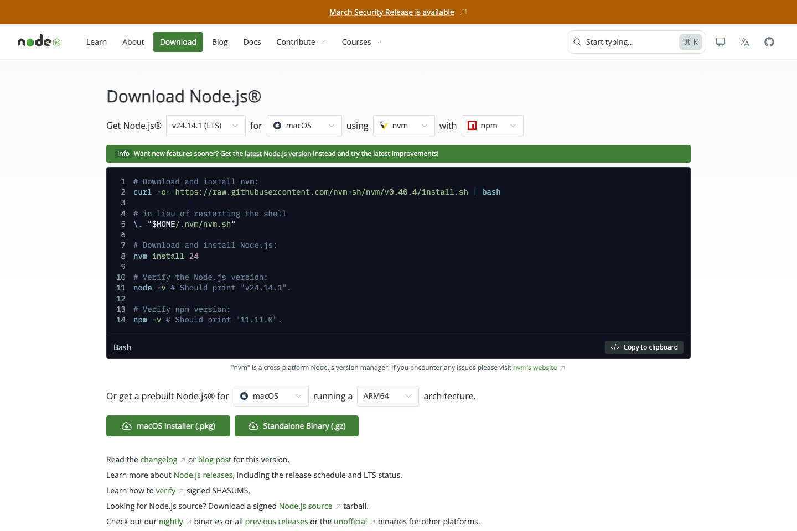

설치 순서
- Node.js 공식 다운로드 페이지 열기
- LTS 버전 선택
- Windows 설치 파일 다운로드
- 설치 파일 실행, 기본 옵션 진행
- 설치 후 새 터미널 열기

Tool Guide
Node.js 설치 필수. 웹 프로젝트 실행, 패키지 설치, 개발 서버 실행용 기본 도구. 설치 기준은 `LTS` 버전
설치 순서

중요
`Current` 보다 `LTS` 우선, 수업과 실습용 기준
설치 후 바로 할 일
node -v
npm -v둘 중 하나라도 안 나오면 설치 다시 확인
처음 듣는 용어
프로젝트 내려받기, 패키지 설치, 개발 서버 실행, 그래서 npm 확인도 함께 필요
설치 확인
node -v
npm -v두 명령 모두 버전 출력, 설치 완료
수업에서 왜 필요한가
자주 막히는 경우
공식 링크